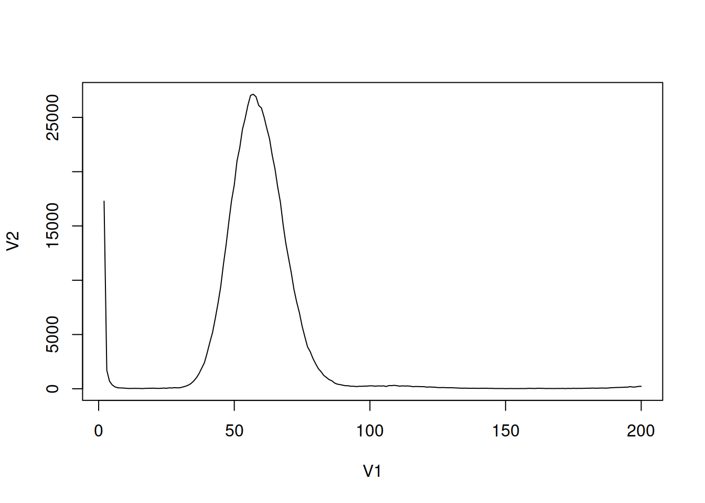
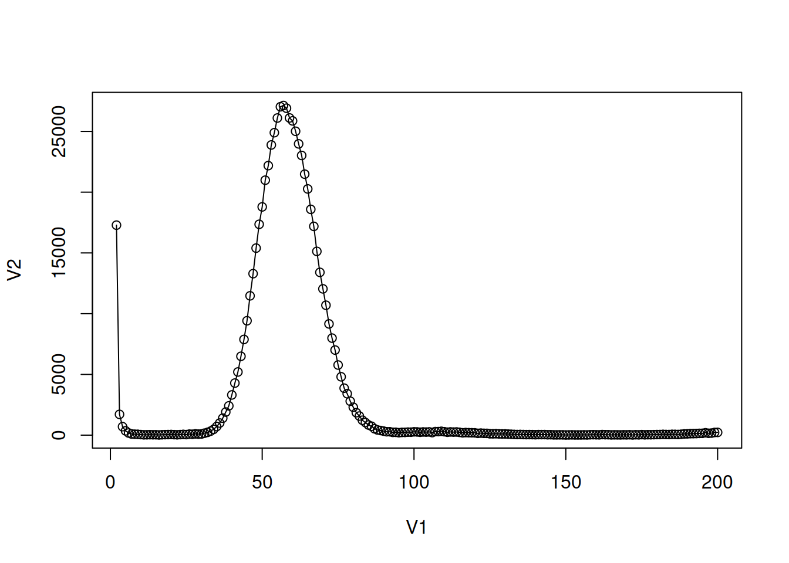

dataframe19 <- read.table("19mer_out.histo") # cargar los datos en dataframe19Fundamentos de NGS
¿Qué son los datos de secuenciación de nueva generación (NGS)?
Los datos NGS son las secuencias tal como provienen directamente de la plataforma de secuenciación en su forma cruda que a menudo contienen cierto grado de información no deseada:
Reads de baja calidad que deben ser completamente descartados o parcialmente recortados (trimmed) antes de llevar a cabo análisis bioinformaticos de los datos.
Secuencias sobrerrepresentadas, como los dímeros de adaptadores.
La longitud y la distribución de la calidad de los reads pueden variar de una plataforma a otra.
En Illumina, es común encontrar errores puntuales en la asignación de un nucleótido.
Nota
Dado que los datos crudos ocupan mucho espacio en disco y una parte significativa de ellos es información no deseada, por lo general, estos datos crudos no se almacenan en repositorios públicos, como SRA, hasta que han pasado por procesos de filtrado previo (pre-procesamiento).
Archivos FASTQ
Representación de secuencias
En informática las secuencias de ADN son una string (cadena) de caracteres.
Secuencias genómicas {A,C,G,T}+
Secuencias mRNA {A,C,G,U}+
Secuencias simples: FASTA
Línea 1: información de la secuencia
Línea 2: la secuencia.
Ejemplo de Fasta
>gi|365266830|gb|JF701598.1| Pinus densiflora var. densiflora voucher Pf0855 trnS-trnG intergenic spacer, partial sequence; chloroplast
GCAGAAAAAATCAGCAGTCATACAGTGCTTGACCTAATTTGATAGCTAGAATACCTGCTGTAAAAGCAAG
AAAAAAAGCTATCAAAAATTTAAGCTCTACCATATCTTCATTCCCTCCTCAATGAGTTTGATTAAATGCG
TTACATGGATTAGTCCATTTATTTCTCTCCAATATCAAATTTTATTATCTAGATATTGAAGGGTTCTCTA
TCTATTTTATTATTATTGTAACGCTATCAGTTGCTCAAGGCCATAGGTTCCTGATCGAAACTACACCAAT
GGGTAGGAGTCCGAAGAAGACAAAATAGAAGAAAAGTGATTGATCCCGACAACATTTTATTCATACATTC
AGTCGATGGAGGGTGAAAGAAAACCAAATGGATCTAGAAGTTATTGCGCAGCTCACTGTTCTGACTCTGA
TGGTTGTATCGGGCCCTTTAGTTATTGTTTTATCAGCAATTCGCAAAGGTAATCTATAATTACAATGAGC
CATCTCCGGAGATGGCTCATTGTAATGATGAAAACGAGGTAATGATTGATATAAACTTTCAATAGAGGTT
GATTGATAACTCCTCATCTTCCTATTGGTTGGACAAAAGATCGATCCAFastq: Illumina Reads
Secuencia fasta + detalles calidad de la información (la Q es de Quality).
Línea 1: Encabezado (Header): comienza con @.
Línea 2: la secuencia.
Línea 3: Comienza con +. Puede ser sólo el símbolo + o repetir la info del Header.
Línea 4: Información de la calidad de secuenciación de cada base. Cada letra o símbolo representa a una base de la secuencia codificado en formato ASCII.
La info de calidad se codifica en ASCII porque esto permite en 1 sólo caracter codificar un valor de calidad. Por lo tanto la línea 2 y la 4 tienen el mismo número de caracteres.
Ordenados de menor a mayor estos son los caracteres ASCII usados para representar calidad en FASTQ:
!"#$%&'()*+,-./0123456789:;<=>?@ABCDEFGHIJKLMNOPQRSTUVWXYZ[\]^_`abcdefghijklmnopqrstuvwxyz{|}~
Ojo
@ y + están dentro de los caracteres ASCII utilizados para codificar la calidad.
Ejemplos de Fastq
Ejemplos:
Ejemplo de datos FASTQ recién salidos de Illumina:
@HWI-ST999:102:D1N6AACXX:1:1101:1235:1936 1:N:0:
ATGTCTCCTGGACCCCTCTGTGCCCAAGCTCCTCATGCATCCTCCTCAGCAACTTGTCCTGTAGCTGAGGCTCACTGACTACCAGCTGCAG
+
1:DAADDDF<B<AGF=FGIEHCCD9DG=1E9?D>CF@HHG??B<GEBGHCG;;CDB8==C@@>>GII@@5?A?@B>CEDCFCC:;?CCCAC@OBIWAN:24:D1KUMACXX:3:1112:9698:62774 1:N:0:
TAATATGGCTAATGCCCTAATCTTAGTGTGCCCAACCCACTTACTAACAAATAACTAACATTAAGATCGGAAGAGCACACGTCTGAACTCAGTCACTGACC
+
CCCFFFFFHHHHHIJJJJJJJJJJJJIIHHIJJJJJJJJJJJJJJJJJJJJIJJJJJJIJJJJIJJJJJJJHHHHFDFFEDEDDDDDDDDDDDDDDDDDDC¿Quieres saber cuáles son las partes del Header? Clic aquí.
Ejemplo de datos FASTQ del SRA:
@SRR001666.1 071112_SLXA-EAS1_s_7:5:1:817:345 length=36
GGGTGATGGCCGCTGCCGATGGCGTCAAATCCCACC
+SRR001666.1 071112_SLXA-EAS1_s_7:5:1:817:345 length=36
IIIIIIIIIIIIIIIIIIIIIIIIIIIIII9IG9ICLos datos FASTQ típicamente están comprimidos en formato gzip (.gz) o tar (.tar.gz o .tgz).
Análisis de datos NGS illumina
Control de Calidad
Antes de saltar a filtrar tus datos con filtros de calidad que la terminal ejecute muy obediente, lo mejor es ver algunos gráficos básicos que nos dicen mucho más que una serie de caracteres ASCII. Usaremos para ello FASTQC que es un programa que hace una serie de análisis básicos y estándar decalidad.
Parámetros en FastQC
Los análisis de FASTQC son útiles para identificar problemas que pudieron surgir durante el laboratorio o durante la secuenciación.
El análisis de FASTQC consiste en los siguientes campos:
Notas importantes
- FASTQ automáticamente dice si nuestra muestra “pasó” o “falló” la evaluación. Sin embargo debemos tomar esto dentro del contexto de lo que esperamos de nuestra librería, ya que FASTQ espera una distribución diversa y al azar de nucleótidos, lo que puede no cumplirse en algunos protocolos.
Vamos a la página de dicho programa a ver ejemplos de:
- Buenos datos Illumina
- Malos datos Illumina
- Corrida Illumina contaminada con dímeros de adaptadores (adapter dimers)
Dímeros de adaptadores
¿Qué que son los dímeros de adaptadores?
Los adaptadores se ligan al ADN de nuestras muestras en un paso de ligación, sin embargo, también pueden ligarse entre sí y luego pegarse a la flow cell. Resultado: son secuenciados pero no proven datos útiles, simplemente la secuencia de los adaptadores repetida muchas veces. Adelante veremos cómo lidiar con ellos bioinformáticamente, pero se recomienda intentar deshacerse de ellos desde el laboratorio (con pequeños, pequeños imanes como Agencourt o símiles de otras marcas).
Importancia de Fastqc
¿Qué tanto importa el análisis FASTQC?
Mucho, a partir del análisis FASTQC es que decidirás si tu secuenciación fue exitosa y qué parámetros de pre-procesamiento deberás utilizar para deshacerte del ruido y quedarte con datos limpios.
Escoger los parámetros adecuados de pre-procesamiento es vital ya que todas las corridas de secuenciación son diferentes. Además entender bien tu FASTQC puede permitirte rescatar datos usables incluso dentro de una mala corrida.
Comando de Fastqc en Linux
Recuerda moverte a la ubicacion donde se encuentras los archivos Fastq con el comando cd y la direccion.
mkdir -p results/quality
fastqc -t 2 *fastq.gz -o results/quality/
Aclaración
- Durante el curso veremos que estos comandos pueden aplicarse en R y complementaremos con comandos en Linux.
Filtrado de Reads
Pre-procesamiento
El pre-procesamiento es esencial para obtener datos limpios a partir de datos crudos en el campo de la bioinformática. Se utiliza principalmente en el análisis de datos biológicos y se inicia con archivos .fastq como entrada, generando también archivos .fastq como salida, posiblemente en versiones comprimidas.
Pasos comunes pre-procesamiento
Recortar secuencias por calidad (Sequence Quality Trimming): Elimina las bases de baja calidad, típicamente en las últimas bases (-3’ end) de secuencias. La cantidad de bases a recortar se decide visualmente o con un parámetro de calidad, utilizando herramientas como FASTQC.
Recortar secuencias (Trimming): Elimina una cantidad específica de bases que no son relevantes para el análisis, como códigos de barras o sitios de restricción.
Filtrar secuencias por calidad: Descarta las secuencias que no cumplen con ciertos estándares de calidad, como un número mínimo de bases con calidad o un promedio de calidad específico.
Quitar adaptadores: Busca secuencias de adaptadores y las elimina de las secuencias finales. También es posible limitar las secuencias finales a aquellas con un adaptador específico.
Filtrar artefactos: Identifica y elimina primers de PCRs, quimeras y otros artefactos de los datos finales.
Separar por barcodes “demultiplexear”: Identifica y separa secuencias que contienen códigos de barras (barcodes) únicos por muestra, permitiendo la distinción de secuencias de diferentes muestras. Esto requiere una lista de barcodes y su ubicación en las secuencias.
Paired end merging: En el caso de secuenciación Illumina en ambos lados (pair end), se unen las lecturas si se detecta que coinciden, lo que permite corregir errores de secuenciación utilizando la base de mayor calidad.
Remover otras secuencias no deseadas: Busca y elimina secuencias no deseadas, como genoma de E. coli, restos de PhiX o partes del genoma que no son de interés, como cpDNA.
Advertencia
Es importante destacar que la lista de barcodes y nombres de muestras es información crítica en un proyecto de bioinformática y debe manejarse con cuidado.
Comando de Trim_galore en Linux
#trim_galore
trim_galore --quality 20 --fastqc --length 250 --output_dir *.gzAnálisis de conteo de K-mers
Esquema del Tutorial
- Contar la ocurrencia de k-mers utilizando Jellyfish 2.2.6
- Generar un histograma utilizando R
- Determinar la región de copia única y el total de k-mers
- Determinar la posición del pico y el tamaño del genoma
- Comparar la forma del pico con la distribución de Poisson
Lectura 1: Conteo de K-meros
Tamaño de k-mer
El tamaño de los k-mers debe ser lo suficientemente grande como para permitir que el k-mer se mapee de manera única en el genoma (un concepto utilizado en el diseño de la longitud de cebadores/oligos para la PCR). K-mers demasiado grandes llevan al uso excesivo de recursos computacionales.
En el primer paso, se calcula la frecuencia de k-mers para determinar la cobertura del genoma lograda durante la secuenciación. Existen herramientas de software como Jellyfish que ayudan a encontrar la frecuencia de k-mers en proyectos de secuenciación. La frecuencia de k-mers sigue una distribución pseudo-normal (en realidad, es una distribución de Poisson) alrededor de la cobertura media en el histograma de recuentos de k-mers.
Una vez que se calculan las frecuencias de k-mers, se traza un histograma para visualizar la distribución y calcular la cobertura media.

La primera cima (en la región roja) se debe principalmente a errores de secuenciación raros y aleatorios en las lecturas. Los valores en el gráfico pueden recortarse para eliminar lecturas con errores de secuenciación.

Con la suposición de que los k-mers se asignan de manera única al genoma, deberían estar presentes solo una vez en una secuencia del genoma. Entonces, su frecuencia reflejará la cobertura del genoma.
Para fines de cálculo, utilizamos la cobertura media, que es de 14 en el gráfico anterior. El área bajo la curva representará el número total de k-mers.
Entonces, la estimación del genoma será:
N = Total de k-mers / Cobertura = Área bajo la curva / cobertura media (14)Metodología
Este estudio tiene como objetivo estimar el tamaño del genoma de una especie utilizando datos de lecturas cortas de baja cobertura. El propósito principal es validar estimaciones previas obtenidas mediante citometría de flujo o generar una nueva estimación computacional.
La estimación del tamaño del genoma se basa en el análisis de subsecuencias cortas llamadas k-mers, extraídas de los datos de secuenciación de Illumina. La elección de un tamaño de k-mer adecuado es esencial para la precisión de la estimación.
El proceso metodológico incluye las siguientes etapas:
Control de Calidad de las Lecturas: Las lecturas de secuenciación se someten a un riguroso control de calidad utilizando la herramienta Sickle, con un umbral mínimo de calidad Phred de 25. Esto asegura la eliminación de lecturas de baja calidad que pueden afectar la precisión de la estimación.
Cálculo de la Distribución de k-mers: Se utiliza el programa Jellyfish para calcular la distribución de k-mers a partir de las lecturas de secuenciación. Esta distribución es esencial para la estimación del tamaño del genoma.
Construcción de un Histograma: Se construye un histograma utilizando el mismo programa Jellyfish para visualizar la distribución de k-mers. Este histograma proporciona información crucial para estimar el tamaño del genoma.
Análisis Estadístico con R: Se utiliza el paquete estadístico R para analizar las distribuciones de k-mers. Inicialmente, se traza el conjunto de datos completo, aunque los primeros puntos de datos pueden tener valores atípicos debido a la baja frecuencia. Una vez determinada la posición del pico en el histograma, se calcula el número total de k-mers en la distribución. Esto permite estimar el tamaño del genoma basándose en la posición del pico. Idealmente, la forma del pico debería seguir una distribución de Poisson. Se exploran diferentes tamaños de k-mer para observar una distribución coherente del tamaño del genoma.
En resumen, este enfoque de estimación del tamaño del genoma combina el análisis de k-mers con el control de calidad de las lecturas y análisis estadísticos para obtener una estimación precisa. Los conjuntos de datos utilizados en el tutorial están disponibles en el clúster BBC, junto con el script utilizado en el proceso.
1. Contar la ocurrencia de k-mers utilizando Jellyfish 2.2.6
Descargar secuencia de ejemplo Fastq
download.file("ftp://ftp.sra.ebi.ac.uk/vol1/fastq/SRR156/080/SRR15616380/SRR15616380_1.fastq.gz", "SRR15616380_1.fastq.gz")
download.file("ftp://ftp.sra.ebi.ac.uk/vol1/fastq/SRR156/080/SRR15616380/SRR15616380_2.fastq.gz", "SRR15616380_2.fastq.gz")wget ftp://ftp.sra.ebi.ac.uk/vol1/fastq/SRR156/080/SRR15616380/SRR15616380_1.fastq.gz
wget ftp://ftp.sra.ebi.ac.uk/vol1/fastq/SRR156/080/SRR15616380/SRR15616380_2.fastq.gzEjecutar jellyfish en Linux
jellyfish count -t 8 -C -m 19 -s 1G -o 19mer_out --min-qual-char=? SRR15616380_1.fastq
Explicación de parámetros
Opciones utilizadas en el conteo de k-mers:
-
-t -treads=unit32Número de hilos a utilizar en la ejecución, por ejemplo, 1,2,3, etc. -
-C -both-strandsContar ambas hebras -
-m -mer-len=unit32Longitud del k-mer -
-s -size=unit32Tamaño del hash/asignación de memoria -
-o -output=stringNombre del archivo de salida -
--min-quality-charValor de calidad de base. La versión 2.2.3 de Jellyfish utiliza la puntuación “Phred”, donde “?” = 30.
Esto creará un archivo de salida llamado 19mer_out. Luego, utilizando el archivo 19mer_out creado anteriormente, se crearán puntos de datos para un histograma utilizando el siguiente comando:
jellyfish histo -o 19mer_out.histo 19mer_out2. Graficar los resultados utilizando R
Para visualizar y graficar los datos, utilizamos R. Con el siguiente comando, cargaremos los datos del archivo 19mer_out.histo.
Errores Illumina
En general, los k-mers de muy baja frecuencia representan números altos que distorsionarían el eje y. Si observamos los puntos de datos en el archivo de histograma, podemos ver que el primer punto de datos tiene un valor excepcionalmente alto en comparación con el siguiente (segundo) punto de datos. Por lo tanto, eliminamos solo la primera línea y volvemos a trazar utilizando R. A partir de ahora, ignoraremos el primer punto de datos para nuestros cálculos.
plot(dataframe19[2:200,], type="l")
3. Determinar la región de copia única y el número total de k-mers
En el examen inicial, el pico comienza desde el segundo punto de datos en adelante. Por lo tanto, ignoramos el primer punto de datos para determinar la región de copia única.
Ahora, utilizando R, volvemos a trazar el gráfico para determinar la región de copia única. Luego incluimos los puntos para mayor claridad en el mismo gráfico.
plot(dataframe19[2:200,], type="l") # traza el gráfico de línea
points(dataframe19[2:200,]) # traza los puntos de datos del 2 al 100
Suponiendo que el número total de puntos de datos es 200, ahora podemos calcular el número total de k-mers en la distribución.
sum(as.numeric(dataframe19[2:200,1]*dataframe19[2:200,2]))[1] 386724864. Determinar la posición del pico y el tamaño del genoma
A partir del gráfico trazado, podemos tener una idea de dónde se encuentra la posición del pico mas alto. Usando el siguiente comando, examinaremos los puntos de datos reales entre 40 y 80.
dataframe19[40:80,] V1 V2
40 40 3311
41 41 4286
42 42 5200
43 43 6492
44 44 7879
45 45 9416
46 46 11468
47 47 13292
48 48 15395
49 49 17354
50 50 18787
51 51 20985
52 52 22185
53 53 23885
54 54 24896
55 55 26102
56 56 27029
57 57 27132
58 58 26910
59 59 26107
60 60 25867
61 61 25011
62 62 23975
63 63 23021
64 64 21481
65 65 20266
66 66 18585
67 67 17185
68 68 15126
69 69 13399
70 70 12042
71 71 10694
72 72 9157
73 73 7988
74 74 7005
75 75 5772
76 76 4804
77 77 3868
78 78 3414
79 79 2795
80 80 2298En este caso, el pico está en el punto 57. Por lo tanto, el tamaño del genoma se puede estimar como:
sum(as.numeric(dataframe19[2:200,1]*dataframe19[2:200,2]))/57
[1] 678464.7 ## ~ 678 MbSería interesante ver la proporción de la región de copia única en comparación con el tamaño total del genoma. En este conjunto de datos, la región de copia única se encuentra entre el punto de datos 2 y 100, por lo que el tamaño de la región de copia única se puede calcular aproximadamente como:
sum(as.numeric(dataframe19[2:100,1]*dataframe19[2:100,2]))/57
[1] 653163.7 ## ~ 653 MbRevisar aqui el genoma de referencia Aqui
La proporción se puede calcular como:
(sum(as.numeric(dataframe19[2:100,1]*dataframe19[2:100,2]))) / (sum(as.numeric(dataframe19[2:200,1]*dataframe19[2:200,2])))[1] 0.96270865. Comparar la forma del pico con la distribución de Poisson
Dado que tenemos una curva agradable, podemos comparar nuestra curva con una curva teórica, que es la distribución de Poisson.
Alineamiento
Formato SAM/BAM
El formato SAM (Sequence Alignment Map) y su versión binaria comprimida BAM (Binary Alignment Map) son herramientas cruciales en el análisis de datos de secuenciación de nueva generación (NGS). Estos formatos se utilizan para representar alineamientos de secuencias con el objetivo de mapear las letras (bases) de dos o más secuencias, permitiendo incluso la detección de espaciadores (indels) y otros tipos de variaciones. A continuación, se detalla el contenido y la importancia de estos formatos:
Contenido del formato SAM
El formato SAM consta de dos partes principales: el encabezado (Header) y el cuerpo del alineamiento (Alignment). El encabezado contiene líneas que comienzan con “@” y proporciona información vital sobre el alineamiento, como la longitud de cada cromosoma, el programa utilizado para generar el alineamiento, entre otros detalles relevantes.
El cuerpo del alineamiento incluye una línea por cada alineamiento de secuencias. Cada línea contiene varias columnas que describen las características del alineamiento. Aquí se enumeran las columnas y su significado:
Read id: Identificador único de la lectura.
FLAG: Información sobre el alineamiento, como orientación, calidad, etc.
Chr: Cromosoma al que se alinea la secuencia.
Start: Posición de inicio en el cromosoma.
Mapping quality: Calidad del mapeo.
CIGAR (alignment): Describe las operaciones de alineamiento, como inserciones, deleciones y sustituciones.
MateChr: Cromosoma del compañero de lectura (en el caso de lecturas pareadas).
MateStart: Posición de inicio del compañero de lectura.
MateDist: Distancia entre las lecturas pareadas.
QuerySeq: Secuencia de la lectura.
QueryBaseQuals: Calidad de las bases en la lectura.
AlignmentScore: Puntuación de alineamiento.
Edit-distance-to-reference: Distancia de edición con respecto a la secuencia de referencia.
Number-of-hits: Número de alineamientos similares.
Strand: Orientación de la lectura.
Hit-index: Índice del alineamiento.Ejemplo de un alineamiento en SAM:
Alineamiento convecional
Coor 12345678901234 5678901234567890123456789012345
ref AGCATGTTAGATAA**GATAGCTGTGCTAGTAGGCAGTCAGCGCCAT
+r001/1 TTAGATAAAGGATA*CTG
+r002 aaaAGATAA*GGATA
+r003 gcctaAGCTAA
+r004 ATAGCT..............TCAGC
-r003 ttagctTAGGC
-r001/2 CAGCGGCATEn SAM se codifica así:
@HD VN:1.5 SO:coordinate
@SQ SN:ref LN:45
r001 99 ref 7 30 8M2I4M1D3M = 37 39 TTAGATAAAGGATACTG *
r002 0 ref 9 30 3S6M1P1I4M * 0 0 AAAAGATAAGGATA *
r003 0 ref 9 30 5S6M * 0 0 GCCTAAGCTAA * SA:Z:ref,29,-,6H5M,17,0;
r004 0 ref 16 30 6M14N5M * 0 0 ATAGCTTCAGC *
r003 2064 ref 29 17 6H5M * 0 0 TAGGC * SA:Z:ref,9,+,5S6M,30,1;
r001 147 ref 37 30 9M = 7 -39 CAGCGGCAT * NM:i:1Preparacion del index
Además de la representación de alineamientos, también es importante entender cómo se prepara el índice del genoma de referencia y cómo se realizan los alineamientos de secuencias. El índice se crea a partir del genoma de referencia y es esencial para realizar alineamientos eficientes. Aquí se presentan los comandos utilizados en el proceso:
## creamos una carpeta para el indexado de genoma
mkdir index
cd index
## descarga de genoma de referencia
wget https://ftp.ncbi.nlm.nih.gov/genomes/refseq/bacteria/Metamycoplasma_hominis/latest_assembly_versions/GCF_000085865.1_ASM8586v1/GCF_000085865.1_ASM8586v1_genomic.fna.gz
## realizamos el indexado del genoma
bwa index -p ref GCF_000085865.1_ASM8586v1_genomic.fna.gz## Descargar genoma
url <- fromJSON(file = "data/reference/ref.json")
filename <- "GCF_000085865.1_ASM8586v1_genomic.fna.gz"
download_genome(url$urlref, filename, "data/reference/")
## Generar Indice
bowtie2_build("data/reference/GCF_000085865.1_ASM8586v1_genomic.fna",
bt2Index = "data/reference/index/myco" , overwrite = TRUE)
Aclaracion
En esta sección se plantea la ejecución en paralelo de R y BASH. Despues ahondaremos en R.
Alineamiento de secuencias
Estos comandos ilustran la descarga del genoma de referencia, la creación de un índice para el genoma y el proceso de alineamiento de secuencias utilizando la herramienta Bowtie2. Posteriormente, los alineamientos se convierten en formato BAM utilizando Samtools.
## Alineamineto de genoma
bwa mem -t 4 -o gen.sam reference/index/ref SRR15616380_1.fastq.gz SRR15616380_2.fastq.gz
## Creación de Archivo BAM
samtools view -u@ 2 gen.sam | \
samtools sort -@ 2 -o gen.sorted.bam -
samtools index gen.sorted.bam## Alineamineto de genoma
bowtie2(bt2Index = "data/reference/index/myco",
samOutput = "results/SRR15616379.sam",
seq1 = "data/processed_data/filtered_F/SRR15616379_filt_1.fastq",
seq2 = "data/processed_data/filtered_R/SRR15616379_filt_2.fastq",
"--threads=3")
## Creación de Archivo BAM
asBam("results/SRR15616379.sam")
En resumen
El formato SAM/BAM y los procesos de indexado y alineamiento son elementos esenciales en el análisis de datos de secuenciación de nueva generación (NGS), permitiendo la representación y procesamiento de alineamientos de secuencias de manera eficiente. Para obtener más información detallada sobre estos formatos y sus aplicaciones, se recomienda consultar la documentación oficial de Samtools y la especificación del formato SAM aquí.